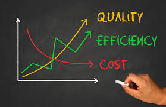

August 03, 2025
Manchester United
Performance Analysis
In this project, I analyzed Manchester United's 2024/25 season using data scraped from FBref. After cleaning and structuring the data
in Python, I performed exploratory analysis in Excel to evaluate team and player performance.The project
concludes with an interactive dashboard highlighting match trends.
September 25, 2025
Retail and Inventory Analytics

Built with SQL Server, this project explores the Northwind sample database to analyze sales and inventory performance. I developed SQL queries and views to track KPIs such as category sales, monthly revenue trends, stock-to-sales ratios, and top customers, then prepared the results for visualization in Power BI.
September 22, 2025
Breast Cancer Classifier

Built a logistic regression model on the Breast Cancer Wisconsin dataset to classify tumors as malignant or benign. Demonstrated end-to-end workflow: EDA, preprocessing, modeling, evaluation (ROC-AUC = 1.0), and coefficient interpretation. Highlighted interpretability and ethical considerations in applying ML to healthcare.
July 31, 2025
VideoGame Sales Analysis
Analyzed global video game sales to investigate platform-specific performance, regional trends, and top publishers using Excel, Power BI, and DAX. Built an interactive dashboard highlighting KPIs such as best-selling games by genre and year-over-year sales shifts. This project demonstrates skills in data cleaning, visualization, and consumer trend analysis.
July 27, 2025
WareHouse Delivery Cost Optimization

Built a linear programming model to optimize warehouse space and staff schedules. Used Python (PuLP) to minimize idle time and operational costs while meeting delivery deadlines and capacity constraints. The model supports dynamic demand and multi-warehouse coordination. Demonstrates quantitative problem-solving and operations research techniques.
July 20, 2025
Delivery Network
Optimization
Designed and optimized a last-mile delivery network using graph theory. Modeled warehouse and city connections as weighted graphs to minimize delivery time and cost. Applied Dijkstras algorithm and custom heuristics in Python to simulate and compare routing strategies. This project showcases practical applications of discrete math in logistics.